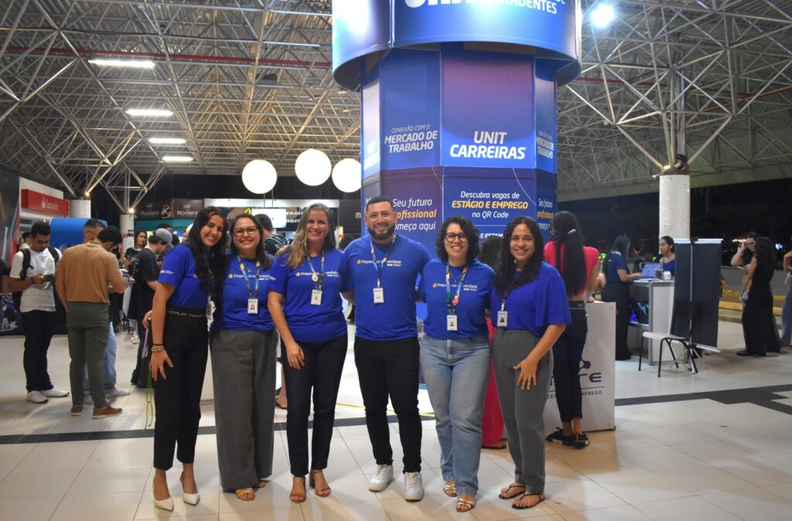

Evento conecta quase 500 estudantes a vagas de estágio e emprego
Liderar no contexto educacional é uma tarefa complexa e multifacetada, que exige mais do que conhecimento técnico. É preciso saber gerir equipes, dialogar com diferentes públicos e, principalmente, inovar para acompanhar as constantes transformações do setor. Pensando nisso, a Pró-Reitoria de Graduação da Universidade Tiradentes (Unit) iniciou um novo ciclo de formação em liderança, com foco nos coordenadores de curso. O objetivo é aprimorar o papel desses profissionais, que atuam como elo central entre a administração, o corpo docente e os alunos.
A iniciativa, que teve seu primeiro encontro nesta segunda-feira, 25, promete uma abordagem prática e colaborativa visando resultados significativos para toda a comunidade acadêmica. De acordo com Ana Cláudia Mota, da coordenação de gestão de aprendizagem, a proposta surgiu a partir da reformulação da Pró-Reitoria de Graduação, sob a liderança do professor Ronaldo Linhares. “Ele percebeu a necessidade de que os nossos coordenadores passassem por uma formação voltada para o desenvolvimento deles. A partir dessa demanda, convidamos a professora Vera Tindó para ser facilitadora e, juntos, desenhamos os módulos de acordo com as competências que precisavam ser mobilizadas”, explicou.
Micheline Simões, gerente de avaliação, reforça a importância estratégica do projeto e conta que essa formação será composta inicialmente por cinco encontros, organizados em cinco módulos, cada um com três horas, totalizando 15 horas. “As atividades sempre serão ativas, ou seja, não será apenas uma aprendizagem unilateral. Os coordenadores realizarão práticas em sala, construirão projetos, entre outras atividades. O objetivo é que ao final desse processo eles tenham um mínimo de autonomia em relação às competências necessárias para atuarem enquanto gestores da universidade”, completa Ana Cláudia.
O poder de inovar e de “alfabetizar o olhar”
O poder de inovar e de “alfabetizar o olhar”
A coordenadora do curso de Odontologia da Unit, Guadalupe Sales Ferreira, enfatizou a importância de sair da rotina para refletir sobre o papel de liderança. “Esses momentos de reflexão, que nos tiram da rotina do dia a dia e dos afazeres, são essenciais, principalmente para quem lidera uma equipe e lida com diversos atores”, disse. Ela explicou que é nesses espaços que se torna possível organizar as ideias para exercer a função de liderança de maneira eficaz. “É preciso sair da nossa realidade imediata para observar de fora e analisar o que está acontecendo”, pontuou Guadalupe. O compartilhamento de vivências entre os participantes também foi um ponto alto, permitindo a busca por respostas e o fortalecimento mútuo.